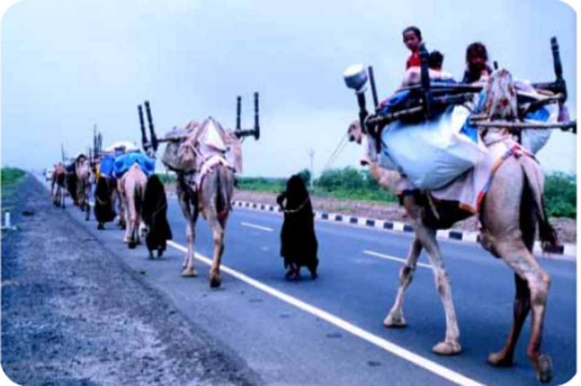

A lot of materials for reconstruction are being unloaded.
Medical camp at village Ratnal
Laying of water supply pipeline in Kutch district
Reconstructed Kutch district hospital- G.K. Hospital at Bhuj

A part of a reconstructed road in Kutch district
❮
❯